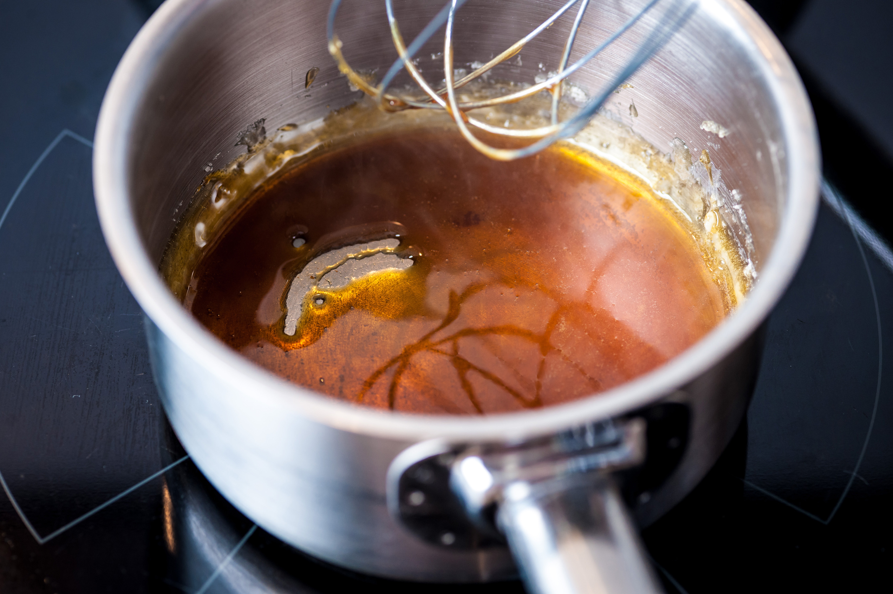
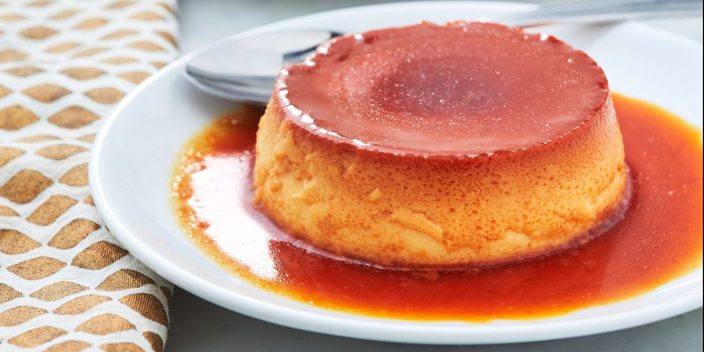

Delicious Flan Recipes
Ingredients :
- 3 Eggs
- 12 ounces of milk
- Sugar
- Vanila Extract
Directions :
- Preheat the oven up to 350 degrees Fahrenheit.
- Turn on the heat to medium-low level, put sugar into the pan and add a bit of water until the sugar turn golden (like caramel)

- Pour that syrup into another glass container and set it aside
- In another bowl, beat the eggs. Put milk and vanila extract into the bowl. Mixed well.
- Pour the egg mixture into the glass container and cover it with aluminum foil
- Bake in the oven up to 60 minutes
- Cool down and serve with condense milk or any fruits of your chocies

Reference Recipes